P2 - Kısa tuş devresi (3 tuş, 11 pin 1.0 mm)
Oluşturma: 11.11.2026 22:17 · Kaynak: docs/K.pdf · fpc-vektor skill
Özet
3 tuşlu membran anahtar katmanı (tarak tipi pedler), 12 oval LED ışık penceresi, 11 pinlik 1.0 mm ZIF kuyruğu. Tek gümüş baskı + dielektrik şerit/çerçeve. P1 LED devresiyle üst üste biner.
Bu rapor nasıl incelenir?
_kontrol_taramali.svg dosyasında çizim, hizalanmış taramanın üstündedir. CorelDRAW'da tarama katmanını kilitleyip katmanları tek tek açıp kapatarak karşılaştırın.Analiz süreci

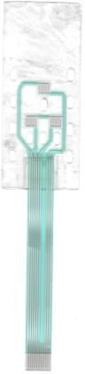
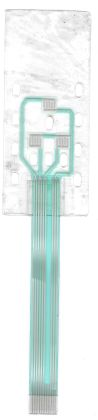
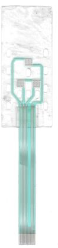
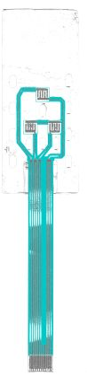
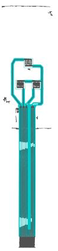
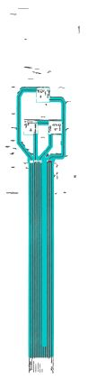
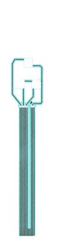
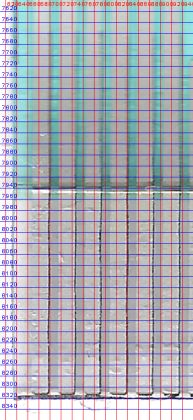
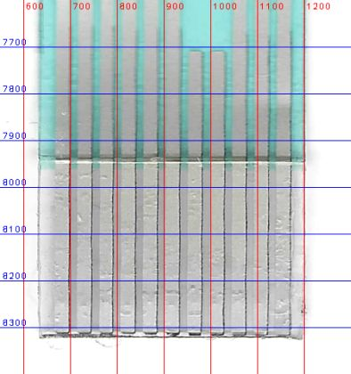
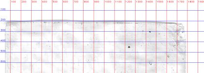
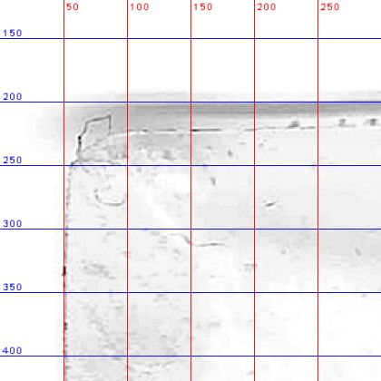
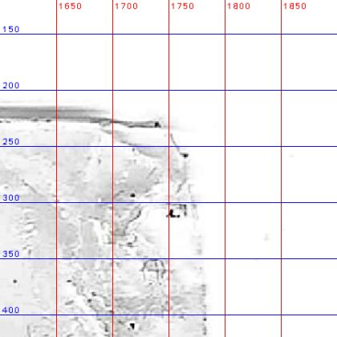
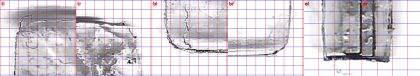
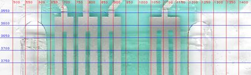
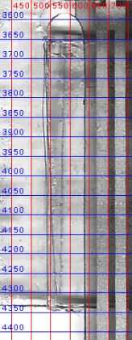
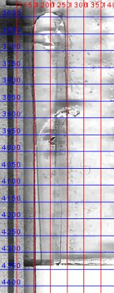
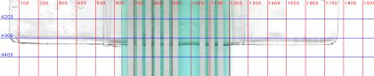
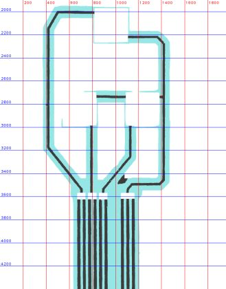
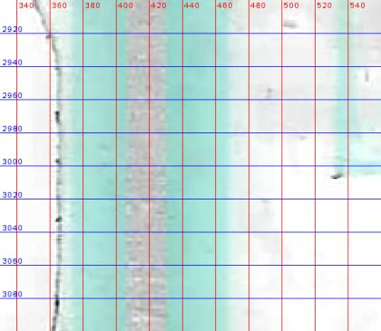
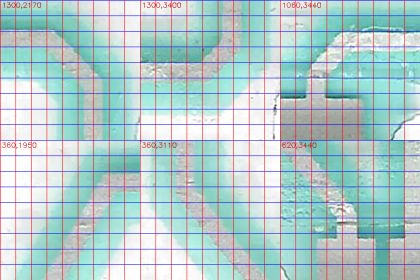
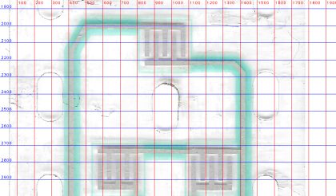
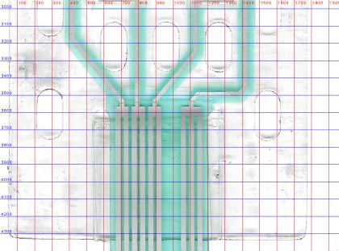
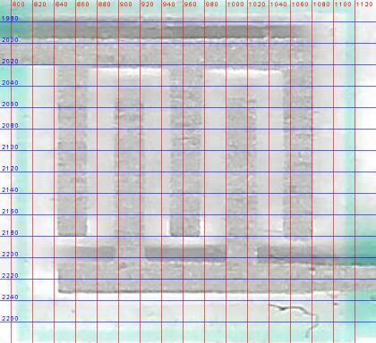
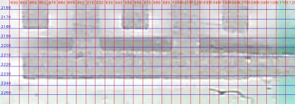
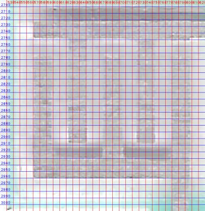
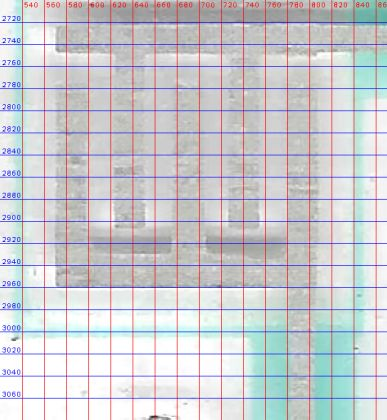
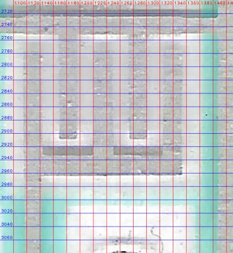
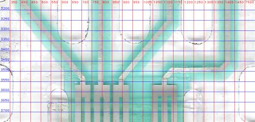
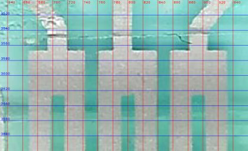
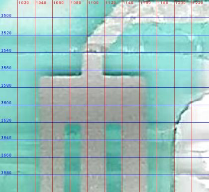
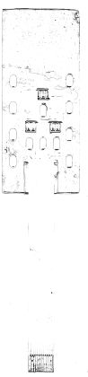
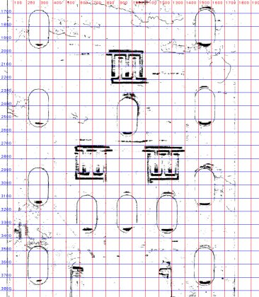
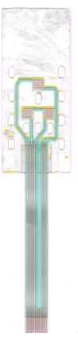
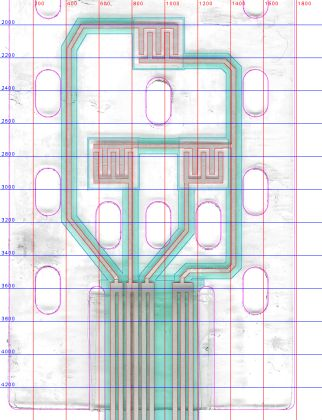
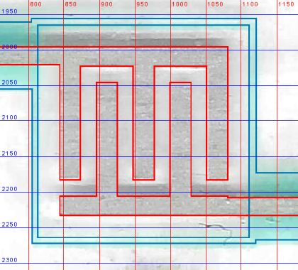
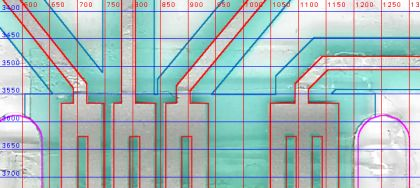
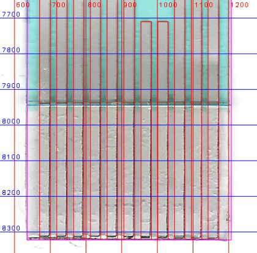
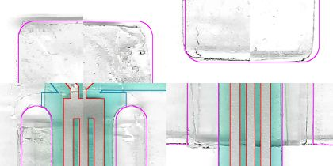
Bulgular
- Yapı: tek gümüş baskı + dielektrik (hat üstünde 2.0 mm şerit, ped çevresinde 0.2 mm çerçeve, kuyrukta tam kaplama) + arka takviye.
- 4 elektriksel ağ: Net1 = A üst tarak; Net2 = B alt tarak; Net3 = C alt tarak; Net4 (ortak) = A alt + B ve C üst tarakları. Sinyal ağları 2'şer, ortak ağ 3 pine bağlanıyor.
- Tuş grubu ve orta ovaller kart eksenine göre 0.85 mm sağda (x = 19.2 mm). Bu kayma taramada tutarlı, tasarımın parçası kabul edildi.
- Çapraz hatlar 45° değil: sol üst 60.0°, sol alt 51.4°, sağ alt 50.2°. Açılar ölçüldüğü gibi korundu.
- Kesim deseni baskıya göre ~0.2° dönük ve ~0.1 mm kayık; bu bir üretim toleransı.
- Ovaller, P1'deki 12 LED ile x'te 0.1 mm içinde örtüşüyor; iki parça birbirini doğruluyor.
Karar noktaları
Ölçümün tek başına yetmediği, yorum veya kullanıcı tercihi gerektiren noktalar. Katılmadığınız kararı numarasıyla bildirin.
- 4 parçanın hepsi
- Kısa set
- Uzun set
- Tek parça ile pilot
- Tarayıcı nominali 47.207 px/mm
- Konnektör adımı (1.00 mm) kalibrasyonu 47.17 px/mm
- Koyu bant barın parçası (bar 0.95 mm)
- Koyu bant tarayıcı gölgesi (bar 0.55 mm)
- Ölçüldüğü gibi (0.2° dönük)
- İdeal: baskıya hizalı ve simetrik
- Baskı taşmasıyla (bleed) bırak
- Kart konturuyla kırp
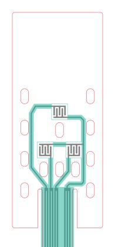
- Her oval kendi ölçülen boyunda
- Hepsi 3.2 × 6.1 mm
- Ölçülen 0.5–1.0 mm (köşe bazında)
- Tümü R1.0
- Dielektrik baskı
- Spacer veya yapışkan kenarı (çizilmez)
- 45°'ye oturt
- Ölçüldüğü gibi bırak (60.0 / 51.4 / 50.2°)
- Grup saydamlığı
- Nesne bazında saydamlık
Ölçüler ve eleman sayıları
| Ölçü | Değer | Not |
|---|---|---|
| Baş (genişlik × yükseklik) | 36.7 × 87.4 mm | köşe R1.0 |
| Toplam boy | 171.9 mm | |
| Kuyruk genişliği | 12.1 mm | yarık 2.0 mm, üst ucu y=71.55 |
| Konnektör | 11 poz × 1.0 mm | kontak 0.6 mm, 7-8 dummy |
| Hat genişliği (baş) | 0.5 mm | dielektrik şerit 2.0 mm |
| Tuş pedi | 5.0 × 5.0 mm | bar 0.55, parmak 0.6, boşluk 0.5, uç boşluğu 0.5 mm |
| Oval pencere | 3.2 × 6.1 mm | 12 adet |
| Dielektrik bitişi / takviye | y=163.9 / y=164.0 mm | |
| Kart sınır kutusu | 36.70 × 171.90 mm | Kesim konturu |
| Kart alanı | 4166.6 mm² | |
| Gümüş alanı (alt baskı) | 669.0 mm² | |
| Dielektrik alanı | 1363.7 mm² |
Eleman sayıları
| Eleman | Adet |
|---|---|
| Hat (polyline) | 16 |
| Gümüş dikdörtgen (ped/blok/parmak) | 25 |
| Oval pencere | 12 |
| LED | 0 |
| Dielektrik yama | 0 |
| Köprü | 0 |
| Kontrol (belirsiz) rota | 0 |
Varsayımlar
- Ölçek konnektör adımı 1.00 mm alınarak kalibre edildi (47.17 px/mm; tarayıcı nominali 47.21).
- Kesim deseni baskıya göre ~0.2° dönük ölçüldü; çizimde ideal hizalı ve simetrik alındı.
- Baş köşe yarıçapı R1.0 mm (taramada 0.5–1.0 mm).
- Tüm ovaller 3.2 × 6.1 mm (ölçülen boylar 5.8–6.3 mm).
- Ped çevresindeki ince turkuaz çerçeve dielektrik baskı kabul edildi.
- Yatay gümüş kenarların ~0.4 mm üstündeki koyu bantlar tarayıcı gölgesi sayıldı, çizilmedi.
Doğrulama (taramaya bindirme)
Kabul durumu: GEÇTİ · ROI y = [1900, 7950] px
| Metrik | Değer | Eşik | Sonuç |
|---|---|---|---|
| Dielektrik kenar sapması medyan | 0.042 mm | ≤ 0.06 mm | ✔ geçti |
| Dielektrik kenar sapması %90 | 0.127 mm | ≤ 0.15 mm | ✔ geçti |
| Dielektrik IoU | 0.968 | ≥ 0.95 | ✔ geçti |
| Gümüş kenar sapması medyan | 0.042 mm | ≤ 0.06 mm | ✔ geçti |
| Gümüş kenar sapması %90 | 0.085 mm | ≤ 0.15 mm | ✔ geçti |
| Gümüş IoU | 0.731 | bilgi | bilgi |
| Taramada karşılıksız gümüş | 0.090 | bilgi | bilgi |
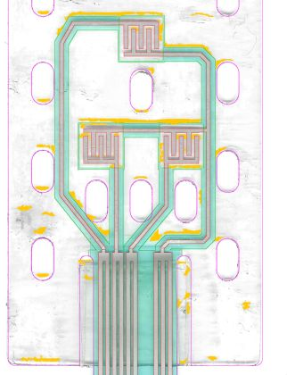
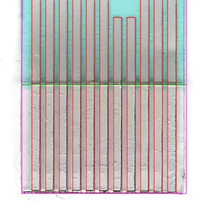
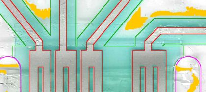
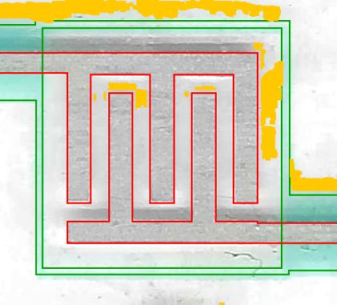
Konnektör pin eşlemesi
| Pin | Bağlantı |
|---|---|
| 1-2 | Net1: A üst tarak (sol dış hat) |
| 3-4 | Net2: B alt tarak |
| 5-6 | Net3: C alt tarak |
| 7-8 | dummy |
| 9-11 | Net4 ortak: A alt + B/C üst tarak |
Fiziksel parçada kontrol edilecekler
İşaretledikleriniz bu tarayıcıda saklanır. Multimetre süreklilik testiyle doğrulayıp sonucu 'Pin 5 ↔ LED B1 üst ped: süreklilik VAR' biçiminde iletin.
Daha iyi sonuç için yapabilecekleriniz
Analiz görselleri
Analiz sırasında üretilen tüm görseller. Açıklamalı olanlar analiz kaydından, diğerleri dosya adından otomatik açıklanmıştır. Izgara etiketleri tarama pikseli (1 mm = 47.17 px).
Çıktılar ve CorelDRAW
| Dosya | Amaç |
|---|---|
output/P2_duzenlenebilir.svg | CorelDRAW'da düzenleme (hatlar kalınlıklı çizgi, pedler dikdörtgen) |
output/P2_uretim.svg | Üretim: her katman tek kapalı dolgu |
output/P2_uretim.pdf | Üretim: katmanlı vektör PDF |
output/P2_kontrol_taramali.svg | Kontrol: çizim + altta hizalı tarama |
Katmanlar: Takviye (arka yuz, ZIF), Gumus iletken, Dielektrik (yalitkan), Kesim (dis kontur + pencereler)
CorelDRAW'da kullanım
- Dosya > Aç (veya İçe Aktar) ile SVG'yi açın; ölçek 1:1 mm'dir, sayfa her yanda 5 mm boşlukludur.
- Katmanlar üst seviye gruplar olarak gelir (Nesne Yöneticisi). Düzenlemeden önce 'Kesim' ve 'Tarama' gruplarını kilitleyin.
- Düzenlenebilir sürümde hatlar kalınlıklı çizgidir: düğüm taşıyarak rota değiştirin, kalınlığı Kontur penceresinden değiştirin.
- Üretim için dolgu sürümünü (
_uretim.svg/.pdf) kullanın; her baskı katmanı ayrı film/elektir. - Kalıcı değişiklik istiyorsanız ölçüyü
parts/<ad>_design.pyiçinde değiştiripfpc.py all <ad>çalıştırın; böylece doğrulama ve rapor da güncellenir.
Ek: parametreler
| Alan | Değer |
|---|---|
| Kaynak | docs/K.pdf sayfa 1 |
| Kırpım (tarama px) | [2557, 199, 4516, 8633] |
| Eğiklik düzeltmesi | 0.76° |
| Ölçek | 47.17 px/mm |
| Parça tipi | tus |
| Tasarım dosyası | parts/p2_design.py |
| Yeniden üretim | python .devin/skills/fpc-vektor/scripts/fpc.py all p2 |